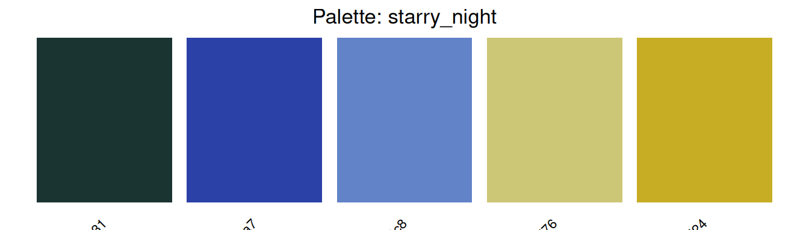
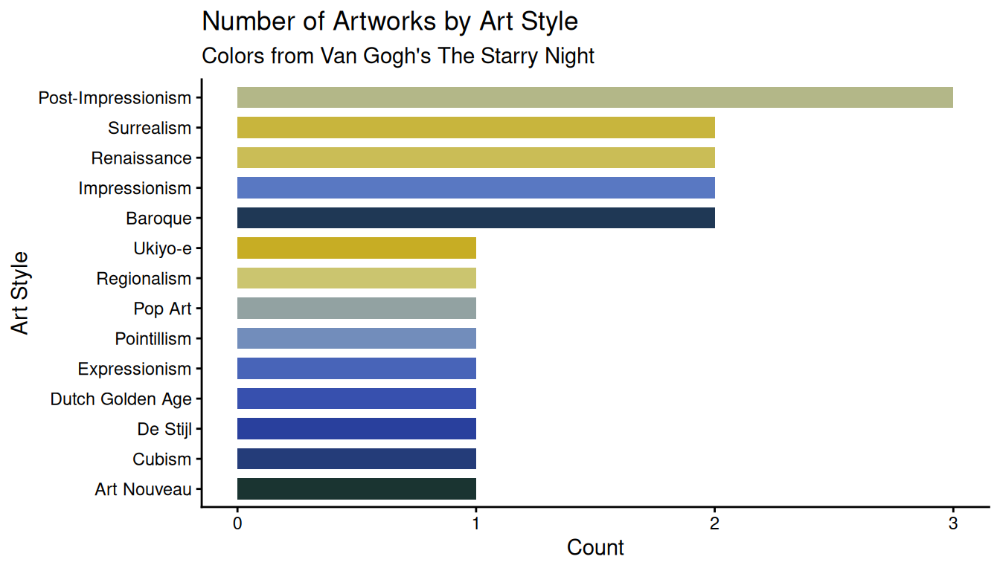

aRtpalette is an R package that brings art-inspired color palettes into data visualizations. The package lets you store palettes as structured objects, preview them as color swatches, and expand them when a chart needs more colors than the source artwork provides.
The inspiration came from the frustration of manually copying hex codes from paintings into ggplot2 charts with no clean workflow. I wanted a tool that treated color as data — something you could store, validate, visualize, and manipulate programmatically.
Installation
# Option 1: using devtoolsdevtools::install_github("ADC-405-S26/aRtpalette")# Option 2: using pakpak::pak("ADC-405-S26/aRtpalette")
Built-in Dataset
The package includes artwork_palettes — a table of 20 color palettes extracted from iconic artworks across art history. Each row is one painting, with five hex color codes and metadata including artist, title, and art movement.
palette_name artist style hex1 hex2 hex3
1 starry_night Van Gogh Post-Impressionism #1a3431 #2b41a7 #6283c8
2 bedroom_arles Van Gogh Post-Impressionism #374D8D #93A0CB #82A866
3 self_portrait_hat Van Gogh Post-Impressionism #FBDC30 #A7A651 #E0BA7A
4 great_wave Hokusai Ukiyo-e #1F284C #2D4472 #6E6352
5 water_lilies Monet Impressionism #9F4640 #4885A4 #395A92
6 woman_parasol Monet Impressionism #82A4BC #4C7899 #2F5136
Core Functions
palette_from_hex() — store colors as a validated object
Validates every hex code on input and returns a clear error message if any is malformed — so problems surface immediately rather than silently breaking a chart later.
Seeing the palette as swatches before applying it to real data saves the back-and-forth of guessing whether colors will work together.
plot_palette(starry_night)

apply_palette() — expand for any chart size
If you ask for more colors than the palette contains, the function interpolates between existing colors — letting you expand any palette creatively for any chart size.
# Exactly 3 colors for a 3-group chartapply_palette(starry_night, n =3)
[1] "#1A3431" "#6283C8" "#C7AD24"
# Expand to 8 colors via interpolationapply_palette(starry_night, n =8)
All three functions working together in one clean pipeline — from dataset to validated palette to preview to chart, with no hex codes typed by hand.
# Step 1 — pull the Starry Night row and turn it into a validated palette objectrow <- artwork_palettes[artwork_palettes$palette_name =="starry_night", ]pal <-palette_from_hex(c(row$hex1, row$hex2, row$hex3, row$hex4, row$hex5),name ="starry_night")# Step 2 — preview the palette before using itplot_palette(pal)
# Step 3 — count artworks by art style from the built-in datasetstyle_counts <-as.data.frame(table(artwork_palettes$style))colnames(style_counts) <-c("style", "count")# Step 4 — expand palette to exactly the number of style groups neededchart_colors <-apply_palette(pal, n =nrow(style_counts))# Step 5 — apply directly to ggplot2ggplot(style_counts, aes(x =reorder(style, count),y = count,fill = style)) +geom_bar(stat ="identity", width =0.7) +scale_fill_manual(values = chart_colors) +coord_flip() +labs(title ="Number of Artworks by Art Style",subtitle ="Colors from Van Gogh's The Starry Night",x ="Art Style",y ="Count" ) +theme_classic() +theme(legend.position ="none")

Summary
aRtpalette provides three functions that work together as a pipeline:
palette_from_hex() — store hex codes as a validated, named palette object
plot_palette() — preview the palette as color swatches before applying
apply_palette() — extract or expand the palette to exactly the colors your chart needs
Combined with the built-in artwork_palettes dataset of 20 palettes from iconic artworks, the package makes it easy to bring art history into R without any manual hex code lookup.